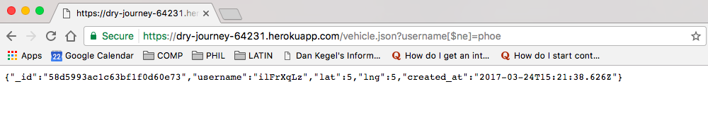

1. Introduction
This security assessment will document and resolve three major security and privacy issues in both the client-side and the server-side for The Black Car Service.
2. Methodology
The security vulnerabilities are discovered through a) curling the website with code injection, and b) examining the source code for bad coding practices that will cause security problems. The major tools employed for the assessment is Curl, Postman, and Google Developer Tool.
3. Abstract of Findings
- The three major issues are 1) cross site scripting: attackers can inject code and fold malicious content to the website which expose the vistors of the site to great dangers, 2) MongoDB injection: attackers can query the database with query string "key[$ne]=value" to access data in the database, 3) Junk insertion: attackers can keep making POST requests and insert junk data to the database until the space is exhausted.
4. Issues Found
a. Cross Site Scripting (XSS)
- issue: type in
curl --data "username=[script]alert('hoho')[/script]&lat=0$lng=0" or
curl --data "username=[script] [/script]&lat=0$lng=0" on the terminal
[/script]&lat=0$lng=0" on the terminal
- alert window will popup at https://dry-journey-64231.herokuapp.com/ every time a user visits the site
- location: https://dry-journey-64231.herokuapp.com/submit
- high severity security issue
- resolution: validate user input and don't process data with script tag or any tags in it.

b. MongoDB Database Security
- issue: type in https://dry-journey-64231.herokuapp.com/vehicle.json?username[$ne]=haha in the browser returns data which has username not equal to "haha" in the database
- location: https://dry-journey-64231.herokuapp.com/vehicle.json?
- high severity privacy isssue: if there is sensitive user data stored in the database, then the information will leak through a single query
- resolution: check for query string, and dont execute the query if the string contains $.

c. MongoDB Database Insertion
- issue: attackers can keep inserting data to the database until the storage runs out
- insertion code:
for (var i=0; i<10000; i++){
$.post("https://dry-journey-64231.herokuapp.com/submit",
{
username: i,
lat: 0,
lng: 0
});
}
- location: https://dry-journey-64231.herokuapp.com/submit
- medium severity: since the database is limited in space, it will quickly run out if attackers keep inserting junk to the database
- resolution: we can resolve the issue by limiting the number of post requests from any IP address. for exmaple, we can set the number of max_request to be 10/hr for a given IP address and further requests would be rejected. example: http://stackoverflow.com/questions/14370717/limiting-the-number-of-request-from-any-given-ip-address

5. Conclusion
- Always censor user input before executing any commands on the server-side to prevent cross-site scripting.
- Use validator to get rid of any special characters to prevent code injection
- Encrypt sensitive information
- Check for irregular insertions
6. References
- mchow01/mongodb_injection_nodejs.txt https://gist.github.com/mchow01/49f8979829f1c488d922